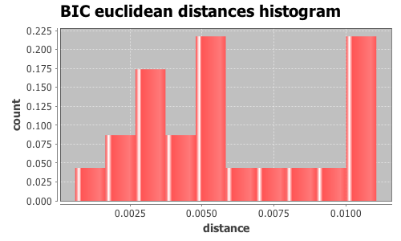
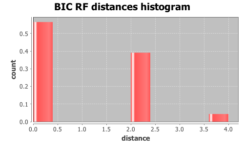

Application Meta
jModeltest 2.1
(c) 2011-onwards D. Darriba, G.L. Taboada, R. Doallo and D. Posada,(1) Department of Biochemistry, Genetics and Immunology
University of Vigo, 36310 Vigo, Spain.
(2) Department of Electronics and Systems
University of A Coruna, 15071 A Coruna, Spain.
e-mail: ddarriba@udc.es, dposada@uvigo.es
Wed Aug 26 12:44:10 EDT 2015
Mac OS X 10.10.5, arch: x86_64, bits: 64, numcores: 4
| Citation: | Darriba D, Taboada GL, Doallo R and Posada D. 2012. "jModelTest 2: more models, new heuristics and parallel computing". Nature Methods 9, 772. |
 Back to top
Back to top Settings
Arguments = -d group3/group3.txt.gene_13.phy -s 3 -i -g 4 -f -BIC -tr 7 -o group3out/g3outgene_13.txtInput Alignment: "group3/group3.txt.gene_13.phy"
NumTaxa = 17
Length = 1,003
Phyml version = 3.0
Phyml binary = PhyML_3.0_macOS_i386
Candidate models = 24
number of substitution schemes = 3
including models with equal/unequal base frequencies (+F)
including models with/without a proportion of invariable sites (+I)
including models with/without rate variation among sites (+G) (nCat = 4)
Optimized free parameters (K) = Substitution parameters + 31 branch lengths + topology
Base tree for likelihood calculations = Maximum Likelihood
Tree topology search operation = NNI
Model Optimization Results
| ID | Name | Partition | -lnL | p | fA | fC | fG | fT | ti/tv | R(a) | R(b) | R(c) | R(d) | R(e) | R(f) | p-inv | shape |
|---|---|---|---|---|---|---|---|---|---|---|---|---|---|---|---|---|---|
| 1 | JC | 000000 | 1973.8093 | 32 | - | - | - | - | - | - | - | - | - | - | - | - | - |
| 2 | JC+I | 000000 | 1951.7660 | 33 | - | - | - | - | - | - | - | - | - | - | - | 0.8590 | - |
| 3 | JC+G | 000000 | 1955.0194 | 33 | - | - | - | - | - | - | - | - | - | - | - | - | 0.0260 |
| 4 | JC+I+G | 000000 | 1950.3394 | 34 | - | - | - | - | - | - | - | - | - | - | - | 0.7830 | 1.0120 |
| 5 | F81 | 000000 | 1942.2624 | 35 | 0.3067 | 0.1812 | 0.2001 | 0.3120 | - | - | - | - | - | - | - | - | - |
| 6 | F81+I | 000000 | 1921.0618 | 36 | 0.3057 | 0.1818 | 0.2009 | 0.3116 | - | - | - | - | - | - | - | 0.8540 | - |
| 7 | F81+G | 000000 | 1923.8669 | 36 | 0.3062 | 0.1815 | 0.2005 | 0.3118 | - | - | - | - | - | - | - | - | 0.0260 |
| 8 | F81+I+G | 000000 | 1919.6540 | 37 | 0.3057 | 0.1819 | 0.2008 | 0.3116 | - | - | - | - | - | - | - | 0.7720 | 1.0050 |
| 9 | K80 | 010010 | 1942.4196 | 33 | - | - | - | - | 3.0978 | - | - | - | - | - | - | - | - |
| 10 | K80+I | 010010 | 1919.7738 | 34 | - | - | - | - | 3.5578 | - | - | - | - | - | - | 0.8630 | - |
| 11 | K80+G | 010010 | 1923.3452 | 34 | - | - | - | - | 3.2823 | - | - | - | - | - | - | - | 0.0260 |
| 12 | K80+I+G | 010010 | 1918.5769 | 35 | - | - | - | - | 3.5487 | - | - | - | - | - | - | 0.7860 | 1.0080 |
| 13 | HKY | 010010 | 1908.8150 | 36 | 0.3076 | 0.1797 | 0.1978 | 0.3149 | 3.0852 | - | - | - | - | - | - | - | - |
| 14 | HKY+I | 010010 | 1888.0740 | 37 | 0.3061 | 0.1802 | 0.2001 | 0.3136 | 3.4155 | - | - | - | - | - | - | 0.8490 | - |
| 15 | HKY+G | 010010 | 1890.5786 | 37 | 0.3070 | 0.1798 | 0.1988 | 0.3144 | 3.2491 | - | - | - | - | - | - | - | 0.0260 |
| 16 | HKY+I+G | 010010 | 1886.8424 | 38 | 0.3065 | 0.1802 | 0.2001 | 0.3133 | 3.4130 | - | - | - | - | - | - | 0.7450 | 0.8550 |
| 17 | SYM | 012345 | 1939.1999 | 37 | - | - | - | - | - | 1.0349 | 6.0369 | 1.6753 | 1.6795 | 10.8211 | 1.0000 | - | - |
| 18 | SYM+I | 012345 | 1915.9885 | 38 | - | - | - | - | - | 0.9554 | 6.4405 | 2.0632 | 1.4697 | 14.2085 | 1.0000 | 0.8630 | - |
| 19 | SYM+G | 012345 | 1919.7497 | 38 | - | - | - | - | - | 1.0009 | 6.1397 | 1.8478 | 1.5791 | 12.3726 | 1.0000 | - | 0.0210 |
| 20 | SYM+I+G | 012345 | 1915.0396 | 39 | - | - | - | - | - | 0.9132 | 6.4390 | 2.0699 | 1.4477 | 13.7188 | 1.0000 | 0.7720 | 0.8730 |
| 21 | GTR | 012345 | 1904.7730 | 40 | 0.3129 | 0.1745 | 0.2021 | 0.3105 | - | 1.1314 | 6.0223 | 1.3204 | 2.2046 | 11.8460 | 1.0000 | - | - |
| 22 | GTR+I | 012345 | 1883.5674 | 41 | 0.3117 | 0.1752 | 0.2039 | 0.3092 | - | 1.1608 | 6.5447 | 1.5661 | 2.2751 | 15.8777 | 1.0000 | 0.8460 | - |
| 23 | GTR+G | 012345 | 1886.1209 | 41 | 0.3124 | 0.1743 | 0.2031 | 0.3102 | - | 1.1741 | 6.2763 | 1.4433 | 2.3018 | 14.1667 | 1.0000 | - | 0.0210 |
| 24 | GTR+I+G | 012345 | 1881.8873 | 42 | 0.3120 | 0.1757 | 0.2031 | 0.3093 | - | 1.0999 | 6.7849 | 1.5726 | 1.7463 | 15.9486 | 1.0000 | 0.7670 | 1.0000 |
There are 3 different topologies. The following table shows the models supporting each topology and the rank according to each Information Criterion, as well as Robinson-Foulds and Euclidean distances with the tree of the best-fit model.
| ID | Models | Topology | AIC | BIC | AICc | DT | |
|---|---|---|---|---|---|---|---|
| 0 |
JC+I+G F81 F81+I F81+G F81+I+G K80+I+G HKY HKY+I HKY+G HKY+I+G SYM+I+G GTR GTR+I GTR+G
|
RANK | - | 0 | - | - | |
| Weight | - | 1.0000 | - | - | |||
| RF | - | 0 | - | - | |||
| AVG Distance | - | 4.3603e-03 | - | - | |||
| Distance VAR | - | 1.1097e-05 | - | - | |||
| 1 |
JC JC+I JC+G K80 K80+I K80+G SYM SYM+I SYM+G
|
RANK | - | 1 | - | - | |
| Weight | - | 0.0000 | - | - | |||
| RF | - | 2 | - | - | |||
| AVG Distance | - | 7.3297e-03 | - | - | |||
| Distance VAR | - | 6.5846e-06 | - | - | |||
| 2 |
GTR+I+G
|
RANK | - | 2 | - | - | |
| Weight | - | 0.0000 | - | - | |||
| RF | - | 4 | - | - | |||
| AVG Distance | - | 8.6455e-03 | - | - | |||
| Distance VAR | - | 0.0000e+00 | - | - |
BIC Selection Results
Model selected
| Model | HKY+I | ||
|---|---|---|---|
| partition | 010010 | ||
| -lnL | 1888.0740 | ||
| K | 37 | ||
| freqA | 0.3061 | R(a) | - |
| freqC | 0.1802 | R(b) | - |
| freqG | 0.2001 | R(c) | - |
| freqT | 0.3136 | R(d) | - |
| ti/tv | 3.4155 | R(e) | - |
| R(f) | - | ||
| p-inv | 0.8490 | gamma | - |
Best model tree
((((((I0149:0.00097590,((I0152:0.00098149,I0150:0.00000003):0.00097874,(I0151:0.00302482,I0144:0.00099144):0.00097410):0.00000002):0.00098369,(((I0135:0.00000000,I0127:0.00000000):0.00310478,I0148:0.00410899):0.00093155,I0158:0.00505926):0.00096959):0.00000002,(((I0141:0.00299979,I0068:0.00000000):0.00000002,I0067:0.00100455):0.00196768,I0147:0.00400157):0.00000002):0.00311219,I0075:0.00099708):0.00103596,I0076:0.00000004):0.00763877,I0111:0.04699465,I0119:0.00369141);
Display best model tree in PhyloWidget
| Model | -lnL | K | BIC | delta | weight | cumWeight |
|---|---|---|---|---|---|---|
| HKY+I | 1888.0740 | 37 | 4031.8458 | 0.0000 | 0.8403 | 0.8403 |
| HKY+I+G | 1886.8424 | 38 | 4036.2933 | 4.4475 | 0.0909 | 0.9312 |
| HKY+G | 1890.5786 | 37 | 4036.8549 | 5.0091 | 0.0687 | 0.9999 |
| GTR+I | 1883.5674 | 41 | 4050.4755 | 18.6296 | 0.0001 | 1.0000 |
| GTR+I+G | 1881.8873 | 42 | 4054.0260 | 22.1802 | 0.0000 | 1.0000 |
| GTR+G | 1886.1209 | 41 | 4055.5826 | 23.7368 | 0.0000 | 1.0000 |
| HKY | 1908.8150 | 36 | 4066.4171 | 34.5713 | 0.0000 | 1.0000 |
| K80+I | 1919.7738 | 34 | 4074.5131 | 42.6673 | 0.0000 | 1.0000 |
| K80+I+G | 1918.5769 | 35 | 4079.0300 | 47.1842 | 0.0000 | 1.0000 |
| K80+G | 1923.3452 | 34 | 4081.6560 | 49.8102 | 0.0000 | 1.0000 |
| GTR | 1904.7730 | 40 | 4085.9761 | 54.1303 | 0.0000 | 1.0000 |
| F81+I | 1921.0618 | 36 | 4090.9106 | 59.0647 | 0.0000 | 1.0000 |
| SYM+I | 1915.9885 | 38 | 4094.5856 | 62.7398 | 0.0000 | 1.0000 |
| F81+I+G | 1919.6540 | 37 | 4095.0058 | 63.1599 | 0.0000 | 1.0000 |
| F81+G | 1923.8669 | 36 | 4096.5207 | 64.6749 | 0.0000 | 1.0000 |
| SYM+I+G | 1915.0396 | 39 | 4099.5984 | 67.7526 | 0.0000 | 1.0000 |
| SYM+G | 1919.7497 | 38 | 4102.1078 | 70.2620 | 0.0000 | 1.0000 |
| K80 | 1942.4196 | 33 | 4112.8940 | 81.0482 | 0.0000 | 1.0000 |
| F81 | 1942.2624 | 35 | 4126.4011 | 94.5552 | 0.0000 | 1.0000 |
| JC+I | 1951.7660 | 33 | 4131.5868 | 99.7410 | 0.0000 | 1.0000 |
| SYM | 1939.1999 | 37 | 4134.0975 | 102.2517 | 0.0000 | 1.0000 |
| JC+I+G | 1950.3394 | 34 | 4135.6443 | 103.7985 | 0.0000 | 1.0000 |
| JC+G | 1955.0194 | 33 | 4138.0936 | 106.2478 | 0.0000 | 1.0000 |
| JC | 1973.8093 | 32 | 4168.7627 | 136.9168 | 0.0000 | 1.0000 |
| -lnL: | negative log likelihod |
| K: | number of estimated parameters |
| BIC: | Bayesian Information Criterion |
| delta: | BIC difference |
| weight: | BIC weight |
| cumWeight: | cumulative BIC weight |
Confidence interval
There are 24 models in the 100.00% confidence interval:
HKY+I HKY+I+G HKY+G GTR+I GTR+I+G GTR+G HKY K80+I K80+I+G K80+G GTR F81+I SYM+I F81+I+G F81+G SYM+I+G SYM+G K80 F81 JC+I SYM JC+I+G JC+G JC

Euclidean distances histogram from each model optimized tree to HKY+I tree.
Euclidean distances histogram from each model optimized tree to HKY+I tree.

Robinson-Foulds distances histogram from the different topologies to HKY+I topology.
Robinson-Foulds distances histogram from the different topologies to HKY+I topology.